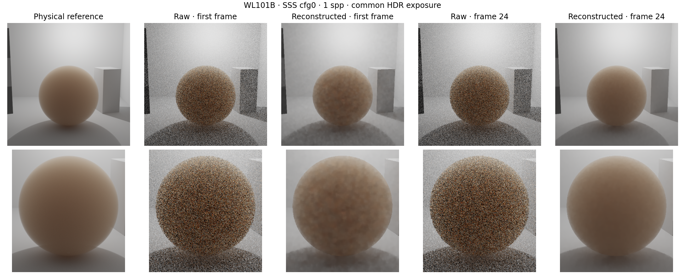
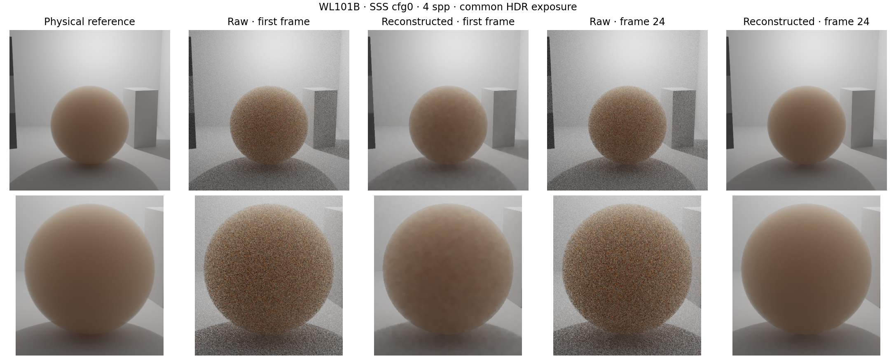
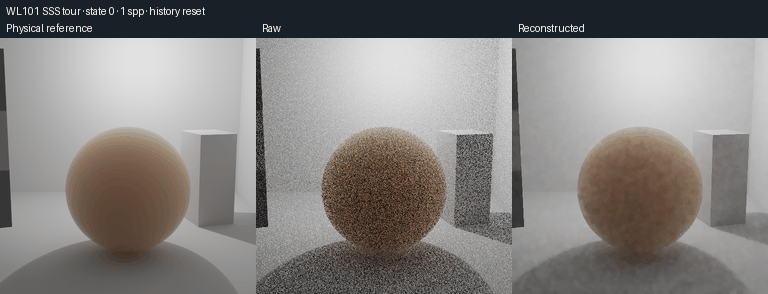
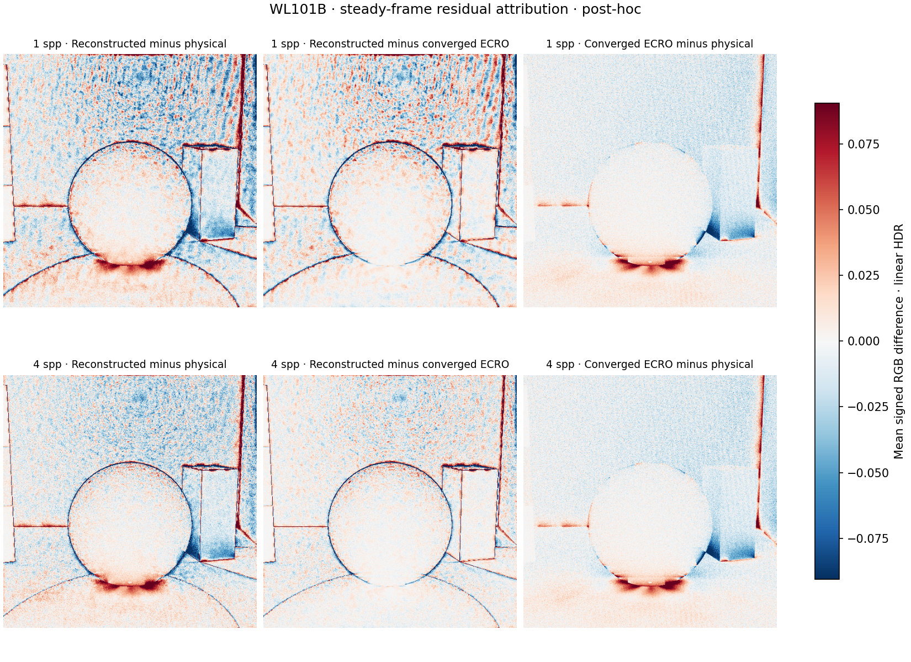

SVGF reduces grain on the sphere and floor. The reconstructed 512² geometry edits take 15.87 ms at 1 spp and 24.30 ms at 4 spp. Both settings fail the prespecified sphere-boundary fidelity criterion.
Metrics and acceptance checks · Raw timing events · Run manifest · Reviewer file hashes · Worklog



1-spp camera motion · 4-spp camera motion · Quality summary
